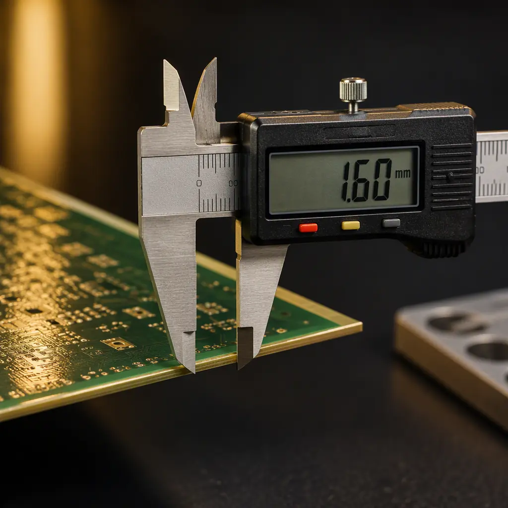

Most electronics buyers sourcing from China have heard of PPAP — Production Part Approval Process — but fewer than one in ten has actually required it from a PCBA supplier. That is a missed lever: PPAP is the only widely standardized process that forces a contract manufacturer to prove, with documents and data, that their production process can repeatedly make your board to specification. It was built for the automotive industry (AIAG PPAP 4th edition) but the framework transfers directly to any high-reliability PCBA — medical, industrial, aerospace, and energy products all benefit.
At Huaxing PCBA, we submit PPAP packages for automotive (IATF 16949), medical, and industrial customers on a regular basis. This guide explains what the 18 elements actually mean for a PCB assembly, which ones deserve your attention as a buyer, how to read a Part Submission Warrant, and the warning signs that a submission is paperwork rather than proof. If you are running a supplier RFP or qualifying a new assembly partner, this is the checklist to add to your evaluation.
What PPAP Is — and When to Require It
PPAP is the documented evidence that a supplier's production process, at volume, produces parts meeting all customer requirements. The AIAG PPAP manual defines 18 elements of submission; the customer (you) decides the submission level (1-5) and therefore how much evidence you want. PPAP is triggered by: a new product, a new supplier, a change in process, a change in tooling, a change in material, or a relocation of production.
| Submission Level | What the Supplier Provides | Typical Use |
|---|---|---|
| Level 1 | PSW only (signed warrant) | Low-risk commodity boards |
| Level 2 | PSW + product samples + limited support data | Standard commercial products |
| Level 3 | PSW + samples + complete supporting data (all 18 elements) | Default for automotive/medical/high-reliability |
| Level 4 | PSW + customer-specified additional requirements | Customer-specific programs |
| Level 5 | Full PPAP reviewed at the supplier's site | New high-risk suppliers |
For most PCBA programs, Level 3 is the right default: it requires the full evidence trail without demanding on-site review. If you are qualifying a brand-new supplier for a safety-critical board, Level 5 (on-site review, which can be done remotely — see our remote factory audit guide) adds real assurance.
The 18 Elements — Which Ones Matter for PCB Assembly
Not all 18 elements carry equal weight for an electronics assembly. Here is the practical breakdown, grouped by how much scrutiny each deserves.
Design Records, DFMEA, and the Design Change Review
For a PCBA, the "design record" is your Gerber + BOM + assembly drawing. Verify the supplier's DFM report matches your design revision, and that any deviations (documented in their DFM review) were approved by you. DFMEA for assembly-level failure modes (solder defects, component damage) should reference the actual board layout — a generic DFMEA template is a red flag.
Process Flow Diagram and PFMEA
The process flow must cover the real line: solder paste printing → SPI → placement → reflow → AOI → X-ray → ICT/functional test → conformal coating (if any) → final inspection → packaging. The PFMEA assigns risk priority numbers (RPNs) to failure modes at each step. Check that the PFMEA's top risks match your board's real risks — e.g., fine-pitch BGA voiding for a BGA-heavy board, or tombstoning for mixed-size passives. Generic PFMEAs that ignore your board's specifics are worthless.
Control Plan — the Document to Actually Read
The control plan is the operational heart of PPAP: for each process step, what is controlled, how it is measured, how often, and what happens on failure. For PCBA, the control plan should name real inspection gates (SPI, AOI, X-ray, ICT) with real frequencies and sample sizes. A control plan that lists "visual inspection 100%" without specifying criteria (IPC-A-610 class) is a plan that cannot be audited. Our acceptance criteria guides cover the standards the plan should reference.
Measurement System Analysis (MSA)
MSA (GR&R studies) proves the measurement equipment can actually detect variation. For PCBA, the measurements that matter: solder paste volume (SPI), AOI defect detection repeatability, impedance testing, and functional test coverage. A supplier who cannot show GR&R results for their SPI and AOI systems cannot claim to control the process with them.
Process Capability Studies — What Cpk Means for Solder
Process capability (Cpk) is the element most often faked, because solder joints do not have a simple measurable dimension like a machined shaft. Realistic PCBA capability studies cover what is measurable: solder paste volume (SPI, target Cpk ≥ 1.33), stencil aperture deposits, pad position, component placement offset, and through-hole fill. When a supplier quotes "Cpk 1.67" without stating which characteristic was studied, ask the question. A capability study on one characteristic does not certify the whole process — see our DPPM benchmarks guide for how process quality actually shows up in yield data.
First Article Inspection (FAI), Dimensional Results, and Material Certifications
The FAI verifies the first production units against the drawing — our FAI guide covers exactly what to check. Material certifications (copper clad laminate CCL, solder paste alloy, solder mask, flux) with lot numbers and expiry dates must be attached. For medical and automotive, also expect the IMDS/declaration of materials and conflict minerals reporting (CMRT guide).
Reading the PSW — Part Submission Warrant
The PSW is the single-page signed declaration that summarizes the whole submission. Every buyer should know the five fields that decide whether to accept it:
Reason for Submission
Must match your trigger (initial submission, engineering change, process change, tooling change). If the stated reason does not match the actual trigger, the PSW is inaccurate — and a PSW that is inaccurate on its face cannot be trusted on anything else.
Result — Approved / Interim / Rejected
An "Interim" approval means the supplier acknowledges gaps and is shipping under a time-limited concession with a corrective action plan. That is acceptable if you agreed to it in writing — but the interim period must have a deadline. Rejected submissions require a corrective action plan (8D) before any further shipments. Our quality dispute resolution guide covers the 8D process and how to enforce it.
Weight, Dimensions, and Drawing Deviation Fields
The recorded weight and dimensions let you verify incoming goods match the approved state. The deviation field is where undocumented changes hide — any deviation listed requires your written approval. Never sign off a PSW with open deviations you have not reviewed.

PPAP vs FAI vs ISIR — Clearing Up the Confusion
These three terms are constantly mixed up, and using them interchangeably in an RFQ produces exactly the wrong evidence from suppliers.
| Document | Scope | When It Happens | What It Proves |
|---|---|---|---|
| FAI (First Article Inspection) | One unit vs drawing | First article of any new build | The part matches the drawing |
| ISIR (Initial Sample Inspection Report) | Sample lot vs spec (VDA style) | Initial samples, common in EU/German customers | Sample lot conforms; lighter process evidence |
| PPAP | Production process + parts | Before mass production starts | The process can repeatably make conforming parts |
If your supplier offers you an FAI when you asked for PPAP, that is not a substitution — it is a partial answer. FAI answers "is this one unit right?" while PPAP answers "can your line do this 10,000 times?" For high-volume or high-reliability products you need the process answer. Many buyers start with FAI for prototypes and escalate to Level 3 PPAP when moving to production — a sensible progression, as long as both are specified explicitly in the RFP.
Red Flags in Supplier PPAP Submissions
After reviewing hundreds of PPAP packages (ours and competitors'), these are the patterns that predict trouble downstream:
Identical Documents Across Different Projects
If the PFMEA, control plan, or capability study has no project-specific content — same RPNs, same risks, same measurements for a dense BGA board and a simple 2-layer power board — the package was generated from a template. Require project-specific details: your board's fine-pitch components, your assembly's specific inspection gates, your materials.
Capability Claims Without Data
"All characteristics Cpk ≥ 1.33" with no raw data, no sample size, no measurement method. Real capability studies include the data, the number of units, the measurement system used, and the date. Demand the raw study. If the supplier cannot produce it, the claim is marketing.
Missing Traceability and Certifications
No lot-level traceability plan, no material certificates, no reflow profile data, no MSL handling records. These are the operational documents that connect the PPAP to the real production run. Our IPC-1782 traceability guide explains the standard that makes lot-level data possible, and our MSL handling guide covers the moisture-control records that belong in any submission.
Procurement Tip: The fastest way to test a PPAP's authenticity: ask for the reflow oven profile chart with actual thermocouple data from the PPAP run, and the SPI data from that same run. Both are machine-generated, date-stamped, and nearly impossible to fake convincingly. If either is missing, the submission is paperwork.
How Huaxing Runs PPAP for Global Customers
For IATF 16949 automotive programs and high-reliability medical/industrial projects, Huaxing PCBA submits Level 3 PPAP packages including: DFM report with your revision control, PFMEA with project-specific risks, control plan mapped to our real production line, SPI/AOI GR&R studies, solder paste volume capability data (Cpk ≥ 1.33), FAI per your drawing, material certificates with lot traceability, and a PSW with accurate deviation disclosure. Our quality system is audited under IATF 16949 and ISO 9001, so the PPAP evidence comes from processes that are themselves audited. Review our certifications guide to see what each quality system actually certifies.
What to Ask for in Your Next RFQ
PPAP turns quality from a promise into a deliverable. In your next RFQ, specify: submission level (Level 3 default), the 18 elements required, the FAI requirement per drawing revision, capability targets (e.g., solder paste volume Cpk ≥ 1.33), and the PSW sign-off gate before mass production. Suppliers who have run PPAP before will quote it without hesitation; suppliers who have not will suddenly discover they are "still preparing documentation." That signal alone is worth the price of asking. Contact our quality team to see a sample PPAP package structure, or send your RFQ and we will respond with our PPAP scope and timeline included.